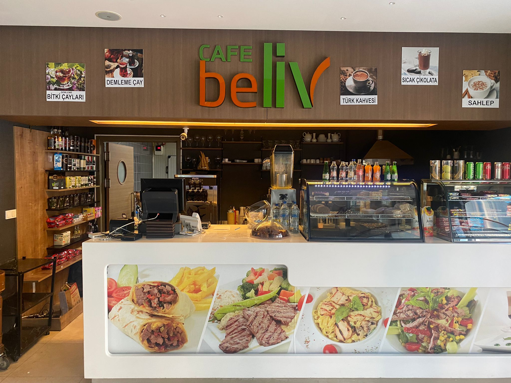

About >> Anasayfaya Dön
Muti Grup 2016 yılında siz değerli müşterilerimize hizmet vermeye başladığından bu yana en kaliteli ürünleri sunuyoruz. Cafe Beliv Bölümümüzde dünya mutfağının en seçkin örneklerini siz değerli misafirlerimizle buluşturmak için çok çalışıyoruz. Restorant bölümümüzde el yapımı tatlılarımız, özenle hazırladığımız kahve çeşitlerimiz ile işimizi zevkle yapıyoruz. Catering bölümünde ise davetlerinizde, toplantılarınızda size yardımcı oluyoruz. En kaliteli ekipmanlarımız ve kaliteden ödün vermeden hazırladığımız taze ikramlarımız ile hizmetinizdeyiz. İşimizi seviyoruz ! Bize gösterdiğiniz ilgi için teşekkür ederiz..
The Chef?

We are proud of our interiors.

Çalışma Saatlerimiz
Pazartesi - Cuma
Cumartesi - Pazar
07:00 - 03:00
07:00 - 03:00